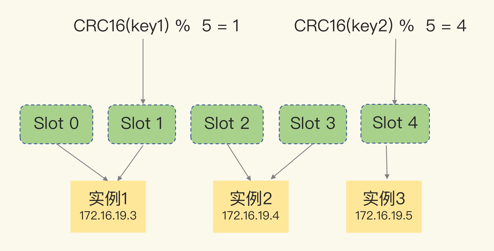
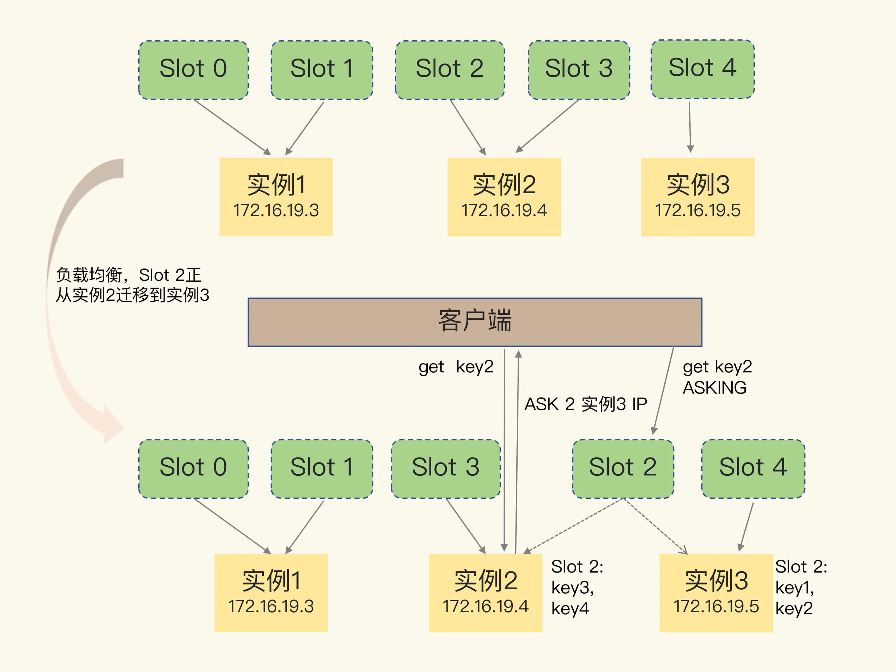

- 00 开篇词 这样学Redis，才能技高一筹.md.html
- 01 基本架构：一个键值数据库包含什么？.md.html
- 02 数据结构：快速的Redis有哪些慢操作？.md.html
- 03 高性能IO模型：为什么单线程Redis能那么快？.md.html
- 04 AOF日志：宕机了，Redis如何避免数据丢失？.md.html
- 05 内存快照：宕机后，Redis如何实现快速恢复？.md.html
- 06 数据同步：主从库如何实现数据一致？.md.html
- 07 哨兵机制：主库挂了，如何不间断服务？.md.html
- 08 哨兵集群：哨兵挂了，主从库还能切换吗？.md.html
- 09 切片集群：数据增多了，是该加内存还是加实例？.md.html
- 10 第1～9讲课后思考题答案及常见问题答疑.md.html
- 11 “万金油”的String，为什么不好用了？.md.html
- 12 有一亿个keys要统计，应该用哪种集合？.md.html
- 13 GEO是什么？还可以定义新的数据类型吗？.md.html
- 14 如何在Redis中保存时间序列数据？.md.html
- 15 消息队列的考验：Redis有哪些解决方案？.md.html
- 16 异步机制：如何避免单线程模型的阻塞？.md.html
- 17 为什么CPU结构也会影响Redis的性能？.md.html
- 18 波动的响应延迟：如何应对变慢的Redis？（上）.md.html
- 19 波动的响应延迟：如何应对变慢的Redis？（下）.md.html
- 20 删除数据后，为什么内存占用率还是很高？.md.html
- 21 缓冲区：一个可能引发“惨案”的地方.md.html
- 22 第11～21讲课后思考题答案及常见问题答疑.md.html
- 23 旁路缓存：Redis是如何工作的？.md.html
- 24 替换策略：缓存满了怎么办？.md.html
- 25 缓存异常（上）：如何解决缓存和数据库的数据不一致问题？.md.html
- 26 缓存异常（下）：如何解决缓存雪崩、击穿、穿透难题？.md.html
- 27 缓存被污染了，该怎么办？.md.html
- 28 Pika：如何基于SSD实现大容量Redis？.md.html
- 29 无锁的原子操作：Redis如何应对并发访问？.md.html
- 30 如何使用Redis实现分布式锁？.md.html
- 31 事务机制：Redis能实现ACID属性吗？.md.html
- 32 Redis主从同步与故障切换，有哪些坑？.md.html
- 33 脑裂：一次奇怪的数据丢失.md.html
- 34 第23~33讲课后思考题答案及常见问题答疑.md.html
- 35 Codis VS Redis Cluster：我该选择哪一个集群方案？.md.html
- 36 Redis支撑秒杀场景的关键技术和实践都有哪些？.md.html
- 37 数据分布优化：如何应对数据倾斜？.md.html
- 38 通信开销：限制Redis Cluster规模的关键因素.md.html
- 39 Redis 6.0的新特性：多线程、客户端缓存与安全.md.html
- 40 Redis的下一步：基于NVM内存的实践.md.html
- 41 第35～40讲课后思考题答案及常见问题答疑.md.html
- 加餐 01 经典的Redis学习资料有哪些？.md.html
- 加餐 02 用户Kaito：我是如何学习Redis的？.md.html
- 加餐 03 用户Kaito：我希望成为在压力中成长的人.md.html
- 加餐 04 Redis客户端如何与服务器端交换命令和数据？.md.html
- 加餐 05 Redis有哪些好用的运维工具？.md.html
- 加餐 06 Redis的使用规范小建议.md.html
- 加餐 07 从微博的Redis实践中，我们可以学到哪些经验？.md.html
- 结束语 从学习Redis到向Redis学习.md.html
- 捐赠
09 切片集群：数据增多了，是该加内存还是加实例？
我曾遇到过这么一个需求：要用 Redis 保存 5000 万个键值对，每个键值对大约是 512B，为了能快速部署并对外提供服务，我们采用云主机来运行 Redis 实例，那么，该如何选择云主机的内存容量呢？
我粗略地计算了一下，这些键值对所占的内存空间大约是 25GB（5000 万 *512B）。所以，当时，我想到的第一个方案就是：选择一台 32GB 内存的云主机来部署 Redis。因为 32GB 的内存能保存所有数据，而且还留有 7GB，可以保证系统的正常运行。同时，我还采用 RDB 对数据做持久化，以确保 Redis 实例故障后，还能从 RDB 恢复数据。
但是，在使用的过程中，我发现，Redis 的响应有时会非常慢。后来，我们使用 INFO 命令查看 Redis 的 latest_fork_usec 指标值（表示最近一次 fork 的耗时），结果显示这个指标值特别高，快到秒级别了。
这跟 Redis 的持久化机制有关系。在使用 RDB 进行持久化时，Redis 会 fork 子进程来完成，fork 操作的用时和 Redis 的数据量是正相关的，而 fork 在执行时会阻塞主线程。数据量越大，fork 操作造成的主线程阻塞的时间越长。所以，在使用 RDB 对 25GB 的数据进行持久化时，数据量较大，后台运行的子进程在 fork 创建时阻塞了主线程，于是就导致 Redis 响应变慢了。
看来，第一个方案显然是不可行的，我们必须要寻找其他的方案。这个时候，我们注意到了 Redis 的切片集群。虽然组建切片集群比较麻烦，但是它可以保存大量数据，而且对 Redis 主线程的阻塞影响较小。
切片集群，也叫分片集群，就是指启动多个 Redis 实例组成一个集群，然后按照一定的规则，把收到的数据划分成多份，每一份用一个实例来保存。回到我们刚刚的场景中，如果把 25GB 的数据平均分成 5 份（当然，也可以不做均分），使用 5 个实例来保存，每个实例只需要保存 5GB 数据。如下图所示：

切片集群架构图
那么，在切片集群中，实例在为 5GB 数据生成 RDB 时，数据量就小了很多，fork 子进程一般不会给主线程带来较长时间的阻塞。采用多个实例保存数据切片后，我们既能保存 25GB 数据，又避免了 fork 子进程阻塞主线程而导致的响应突然变慢。
在实际应用 Redis 时，随着用户或业务规模的扩展，保存大量数据的情况通常是无法避免的。而切片集群，就是一个非常好的解决方案。这节课，我们就来学习一下。
如何保存更多数据？
在刚刚的案例里，为了保存大量数据，我们使用了大内存云主机和切片集群两种方法。实际上，这两种方法分别对应着 Redis 应对数据量增多的两种方案：纵向扩展（scale up）和横向扩展（scale out）。
- 纵向扩展：升级单个 Redis 实例的资源配置，包括增加内存容量、增加磁盘容量、使用更高配置的 CPU。就像下图中，原来的实例内存是 8GB，硬盘是 50GB，纵向扩展后，内存增加到 24GB，磁盘增加到 150GB。
- 横向扩展：横向增加当前 Redis 实例的个数，就像下图中，原来使用 1 个 8GB 内存、50GB 磁盘的实例，现在使用三个相同配置的实例。

纵向扩展和横向扩展对比图
那么，这两种方式的优缺点分别是什么呢？
首先，纵向扩展的好处是，实施起来简单、直接。不过，这个方案也面临两个潜在的问题。
第一个问题是，当使用 RDB 对数据进行持久化时，如果数据量增加，需要的内存也会增加，主线程 fork 子进程时就可能会阻塞（比如刚刚的例子中的情况）。不过，如果你不要求持久化保存 Redis 数据，那么，纵向扩展会是一个不错的选择。
不过，这时，你还要面对第二个问题：纵向扩展会受到硬件和成本的限制。这很容易理解，毕竟，把内存从 32GB 扩展到 64GB 还算容易，但是，要想扩充到 1TB，就会面临硬件容量和成本上的限制了。
与纵向扩展相比，横向扩展是一个扩展性更好的方案。这是因为，要想保存更多的数据，采用这种方案的话，只用增加 Redis 的实例个数就行了，不用担心单个实例的硬件和成本限制。在面向百万、千万级别的用户规模时，横向扩展的 Redis 切片集群会是一个非常好的选择。
不过，在只使用单个实例的时候，数据存在哪儿，客户端访问哪儿，都是非常明确的，但是，切片集群不可避免地涉及到多个实例的分布式管理问题。要想把切片集群用起来，我们就需要解决两大问题：
- 数据切片后，在多个实例之间如何分布？
- 客户端怎么确定想要访问的数据在哪个实例上？
接下来，我们就一个个地解决。
数据切片和实例的对应分布关系
在切片集群中，数据需要分布在不同实例上，那么，数据和实例之间如何对应呢？这就和接下来我要讲的 Redis Cluster 方案有关了。不过，我们要先弄明白切片集群和 Redis Cluster 的联系与区别。
实际上，切片集群是一种保存大量数据的通用机制，这个机制可以有不同的实现方案。在 Redis 3.0 之前，官方并没有针对切片集群提供具体的方案。从 3.0 开始，官方提供了一个名为 Redis Cluster 的方案，用于实现切片集群。Redis Cluster 方案中就规定了数据和实例的对应规则。
具体来说，Redis Cluster 方案采用哈希槽（Hash Slot，接下来我会直接称之为 Slot），来处理数据和实例之间的映射关系。在 Redis Cluster 方案中，一个切片集群共有 16384 个哈希槽，这些哈希槽类似于数据分区，每个键值对都会根据它的 key，被映射到一个哈希槽中。
具体的映射过程分为两大步：首先根据键值对的 key，按照CRC16 算法计算一个 16 bit 的值；然后，再用这个 16bit 值对 16384 取模，得到 0~16383 范围内的模数，每个模数代表一个相应编号的哈希槽。关于 CRC16 算法，不是这节课的重点，你简单看下链接中的资料就可以了。
那么，这些哈希槽又是如何被映射到具体的 Redis 实例上的呢？
我们在部署 Redis Cluster 方案时，可以使用 cluster create 命令创建集群，此时，Redis 会自动把这些槽平均分布在集群实例上。例如，如果集群中有 N 个实例，那么，每个实例上的槽个数为 16384/N 个。
当然， 我们也可以使用 cluster meet 命令手动建立实例间的连接，形成集群，再使用 cluster addslots 命令，指定每个实例上的哈希槽个数。
举个例子，假设集群中不同 Redis 实例的内存大小配置不一，如果把哈希槽均分在各个实例上，在保存相同数量的键值对时，和内存大的实例相比，内存小的实例就会有更大的容量压力。遇到这种情况时，你可以根据不同实例的资源配置情况，使用 cluster addslots 命令手动分配哈希槽。
为了便于你理解，我画一张示意图来解释一下，数据、哈希槽、实例这三者的映射分布情况。

示意图中的切片集群一共有 3 个实例，同时假设有 5 个哈希槽，我们首先可以通过下面的命令手动分配哈希槽：实例 1 保存哈希槽 0 和 1，实例 2 保存哈希槽 2 和 3，实例 3 保存哈希槽 4。
redis-cli -h 172.16.19.3 –p 6379 cluster addslots 0,1
redis-cli -h 172.16.19.4 –p 6379 cluster addslots 2,3
redis-cli -h 172.16.19.5 –p 6379 cluster addslots 4
在集群运行的过程中，key1 和 key2 计算完 CRC16 值后，对哈希槽总个数 5 取模，再根据各自的模数结果，就可以被映射到对应的实例 1 和实例 3 上了。
另外，我再给你一个小提醒，在手动分配哈希槽时，需要把 16384 个槽都分配完，否则 Redis 集群无法正常工作。
好了，通过哈希槽，切片集群就实现了数据到哈希槽、哈希槽再到实例的分配。但是，即使实例有了哈希槽的映射信息，客户端又是怎么知道要访问的数据在哪个实例上呢？接下来，我就来和你聊聊。
客户端如何定位数据？
在定位键值对数据时，它所处的哈希槽是可以通过计算得到的，这个计算可以在客户端发送请求时来执行。但是，要进一步定位到实例，还需要知道哈希槽分布在哪个实例上。
一般来说，客户端和集群实例建立连接后，实例就会把哈希槽的分配信息发给客户端。但是，在集群刚刚创建的时候，每个实例只知道自己被分配了哪些哈希槽，是不知道其他实例拥有的哈希槽信息的。
那么，客户端为什么可以在访问任何一个实例时，都能获得所有的哈希槽信息呢？这是因为，Redis 实例会把自己的哈希槽信息发给和它相连接的其它实例，来完成哈希槽分配信息的扩散。当实例之间相互连接后，每个实例就有所有哈希槽的映射关系了。
客户端收到哈希槽信息后，会把哈希槽信息缓存在本地。当客户端请求键值对时，会先计算键所对应的哈希槽，然后就可以给相应的实例发送请求了。
但是，在集群中，实例和哈希槽的对应关系并不是一成不变的，最常见的变化有两个：
- 在集群中，实例有新增或删除，Redis 需要重新分配哈希槽；
- 为了负载均衡，Redis 需要把哈希槽在所有实例上重新分布一遍。
此时，实例之间还可以通过相互传递消息，获得最新的哈希槽分配信息，但是，客户端是无法主动感知这些变化的。这就会导致，它缓存的分配信息和最新的分配信息就不一致了，那该怎么办呢？
Redis Cluster 方案提供了一种重定向机制，所谓的“重定向”，就是指，客户端给一个实例发送数据读写操作时，这个实例上并没有相应的数据，客户端要再给一个新实例发送操作命令。
那客户端又是怎么知道重定向时的新实例的访问地址呢？当客户端把一个键值对的操作请求发给一个实例时，如果这个实例上并没有这个键值对映射的哈希槽，那么，这个实例就会给客户端返回下面的 MOVED 命令响应结果，这个结果中就包含了新实例的访问地址。
GET hello:key
(error) MOVED 13320 172.16.19.5:6379
其中，MOVED 命令表示，客户端请求的键值对所在的哈希槽 13320，实际是在 172.16.19.5 这个实例上。通过返回的 MOVED 命令，就相当于把哈希槽所在的新实例的信息告诉给客户端了。这样一来，客户端就可以直接和 172.16.19.5 连接，并发送操作请求了。
我画一张图来说明一下，MOVED 重定向命令的使用方法。可以看到，由于负载均衡，Slot 2 中的数据已经从实例 2 迁移到了实例 3，但是，客户端缓存仍然记录着“Slot 2 在实例 2”的信息，所以会给实例 2 发送命令。实例 2 给客户端返回一条 MOVED 命令，把 Slot 2 的最新位置（也就是在实例 3 上），返回给客户端，客户端就会再次向实例 3 发送请求，同时还会更新本地缓存，把 Slot 2 与实例的对应关系更新过来。

客户端MOVED重定向命令
需要注意的是，在上图中，当客户端给实例 2 发送命令时，Slot 2 中的数据已经全部迁移到了实例 3。在实际应用时，如果 Slot 2 中的数据比较多，就可能会出现一种情况：客户端向实例 2 发送请求，但此时，Slot 2 中的数据只有一部分迁移到了实例 3，还有部分数据没有迁移。在这种迁移部分完成的情况下，客户端就会收到一条 ASK 报错信息，如下所示：
GET hello:key
(error) ASK 13320 172.16.19.5:6379
这个结果中的 ASK 命令就表示，客户端请求的键值对所在的哈希槽 13320，在 172.16.19.5 这个实例上，但是这个哈希槽正在迁移。此时，客户端需要先给 172.16.19.5 这个实例发送一个 ASKING 命令。这个命令的意思是，让这个实例允许执行客户端接下来发送的命令。然后，客户端再向这个实例发送 GET 命令，以读取数据。
看起来好像有点复杂，我再借助图片来解释一下。
在下图中，Slot 2 正在从实例 2 往实例 3 迁移，key1 和 key2 已经迁移过去，key3 和 key4 还在实例 2。客户端向实例 2 请求 key2 后，就会收到实例 2 返回的 ASK 命令。
ASK 命令表示两层含义：第一，表明 Slot 数据还在迁移中；第二，ASK 命令把客户端所请求数据的最新实例地址返回给客户端，此时，客户端需要给实例 3 发送 ASKING 命令，然后再发送操作命令。

客户端ASK重定向命令
和 MOVED 命令不同，ASK 命令并不会更新客户端缓存的哈希槽分配信息。所以，在上图中，如果客户端再次请求 Slot 2 中的数据，它还是会给实例 2 发送请求。这也就是说，ASK 命令的作用只是让客户端能给新实例发送一次请求，而不像 MOVED 命令那样，会更改本地缓存，让后续所有命令都发往新实例。
小结
这节课，我们学习了切片集群在保存大量数据方面的优势，以及基于哈希槽的数据分布机制和客户端定位键值对的方法。
在应对数据量扩容时，虽然增加内存这种纵向扩展的方法简单直接，但是会造成数据库的内存过大，导致性能变慢。Redis 切片集群提供了横向扩展的模式，也就是使用多个实例，并给每个实例配置一定数量的哈希槽，数据可以通过键的哈希值映射到哈希槽，再通过哈希槽分散保存到不同的实例上。这样做的好处是扩展性好，不管有多少数据，切片集群都能应对。
另外，集群的实例增减，或者是为了实现负载均衡而进行的数据重新分布，会导致哈希槽和实例的映射关系发生变化，客户端发送请求时，会收到命令执行报错信息。了解了 MOVED 和 ASK 命令，你就不会为这类报错而头疼了。
我刚刚说过，在 Redis 3.0 之前，Redis 官方并没有提供切片集群方案，但是，其实当时业界已经有了一些切片集群的方案，例如基于客户端分区的 ShardedJedis，基于代理的 Codis、Twemproxy 等。这些方案的应用早于 Redis Cluster 方案，在支撑的集群实例规模、集群稳定性、客户端友好性方面也都有着各自的优势，我会在后面的课程中，专门和你聊聊这些方案的实现机制，以及实践经验。这样一来，当你再碰到业务发展带来的数据量巨大的难题时，就可以根据这些方案的特点，选择合适的方案实现切片集群，以应对业务需求了。
每课一问
按照惯例，给你提一个小问题：Redis Cluster 方案通过哈希槽的方式把键值对分配到不同的实例上，这个过程需要对键值对的 key 做 CRC 计算，然后再和哈希槽做映射，这样做有什么好处吗？如果用一个表直接把键值对和实例的对应关系记录下来（例如键值对 1 在实例 2 上，键值对 2 在实例 1 上），这样就不用计算 key 和哈希槽的对应关系了，只用查表就行了，Redis 为什么不这么做呢？
欢迎你在留言区畅所欲言，如果你觉得有收获，也希望你能帮我把今天的内容分享给你的朋友，帮助更多人解决切片集群的问题。
© 2019 - 2023 Liangliang Lee. Powered by gin and hexo-theme-book.